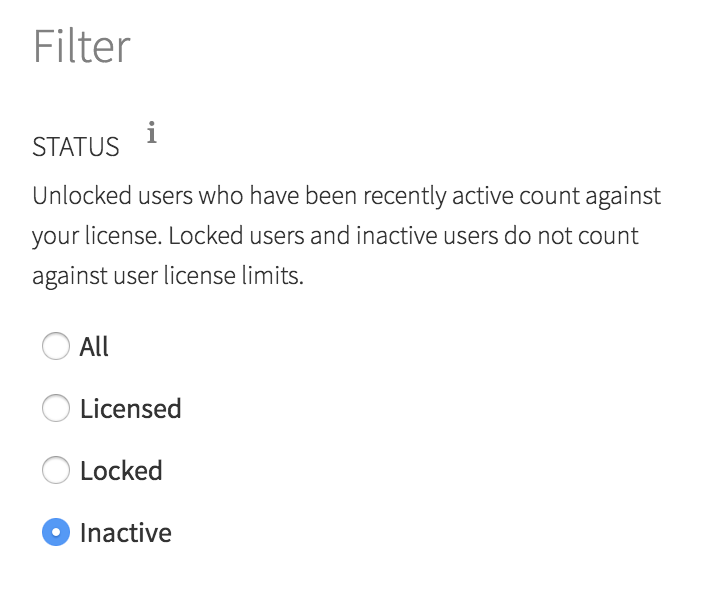
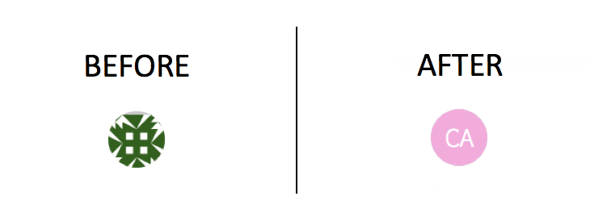

2018-05-09
RStudio Connect version 1.6.2 is now available!
There are a handful of new features that are highlighted below. We encourage you to upgrade as soon as possible!
If you have installed R using apt-get, yum, or some other package manager, we recommend that you install R from source instead. This protects you from application breakages when the system version of R is upgraded. We have updated our documentation to reflect these best practices concerning R administration for use with Connect.
Installing R from source allows installing multiple versions of R side by side, and allows content to persist as published without risk of breaking during an upgrade to the version of R. This also allows publishers to publish to a version of R that more closely approximates their development environment.
For Connect implementations with many users, we have added features to the User page that allow administrators to filter users by various states. Last release, we added the ability for administrators to filter between users that are counting against the Connect license and those that are inactive. This release, we also exposed the ability for administrators to filter inactive users into those that were manually locked and those that are not counting against your license due to inactivity.

Connect Server API
The Connect Server API was introduced in Connect 1.6.0. This release, we added an endpoint called /audit_logs where audit logs can be accessed and paged. There is an example of how to use the API in the Connect Server API Cookbook. Stay tuned as we add endpoints to the Connect Server API to allow programmatic interaction with the features of RStudio Connect.
Content Filtering
Content searching and content filtering state now persists when a user navigates to a new page and then returns. To return to the default content screen, the user can select “Reset all filters.”
Email Customization
In the last few releases, Connect has added features that allow publishers of RMarkdown documents to customize the email output of scheduled RMarkdown reports. In this release, publishers gain the ability to optionally suppress attachments or suppress email output altogether.
These options can be set in the YAML header for a RMarkdown document, but are probably more useful when set inline by editing rmarkdown::output_metadata. For instance, in financial market analysis, I might decide that variance is not significant enough to warrant an email update, and thereby ensure email updates only occur when there is critical information to deliver.
New Icons
Connect previously used Gravatar icons. We have changed this to standard monogram icons, which should fit better with offline installations and other enterprise applications.

Upgrade Planning
There are no special precautions to be aware of when upgrading from v1.6.0 to v1.6.2. You can expect the installation and startup of v1.6.2 to be complete in under a minute.
If you’re upgrading from a release older than v1.6.0, be sure to consider the “Upgrade Planning” notes from the intervening releases, as well.
If you haven’t yet had a chance to download and try RStudio Connect, we encourage you to do so. RStudio Connect is the best way to share all the work that you do in R (Shiny apps, R Markdown documents, plots, dashboards, Plumber APIs, etc.) with collaborators, colleagues, or customers.
You can find more details or download a 45-day evaluation of the product at https://www.rstudio.com/products/connect/. Additional resources can be found below.